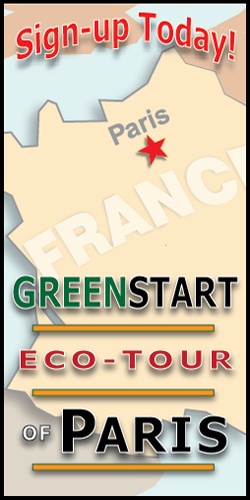

Eco-Touring
It's hard to be environmentally conscious when you're on vacation or traveling on business in unfamiliar cities and countries. Just the very act of travel often uses tons of fuel and energy to move you from one place to the other. But, doing the necessary research ahead of time takes hours and hours.
So, where do you start?
Start here! Our dedicated staff at Meridien GreenStart is devoted to finding the best ways to get around the town, the state, the country...and even the world! Check out our upcoming Eco-Tour and where we're visiting this year. You don't want to miss it!
Click here to sign up.
Eco-Tour of ParisSign up today for this fantastic 10-day tour of the city of light: Paris, France. For 10 days, you will enjoy the best that this wonderful city has to offer and travel secure in the knowledge that we have spared no effort to choose modes of travel and accommodation that preserve the environment and create as little waste as possible. See some of the highlights below: |
|
Tour Eiffel (Day 1)What visit to Paris would be complete without a indepth exploration of this magnificent feat of engineering. We'll take you behind the scenes where the general public cannot go. |
 |
Paris Underground (Days 3-4)Criss-crossing the city in all directions Paris sits on thousands of miles of tunnels and underground spaces. Come with us as we explore this unique vantage of the city. |
|
Seine Dinner Cruise (Day 6)The Seine cuts a serpentine path through the heart of Paris dividing the city into the iconic left and right banks. You will experience the unique perspective of this beautiful city from the water's edge. |
|
Champs Élysées (Day 8)Probably the most famous street in the world and certainly one of the most beautiful. Come take an all-day walking tour of this amazing avenue and end it at the Louvre Museum of Art. |
|